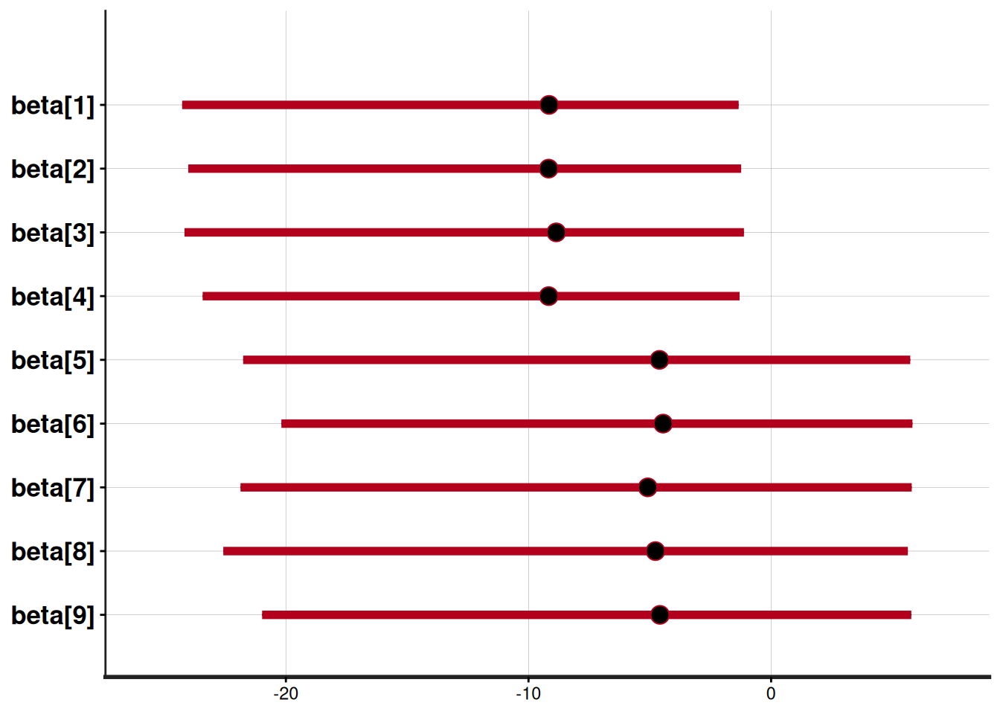
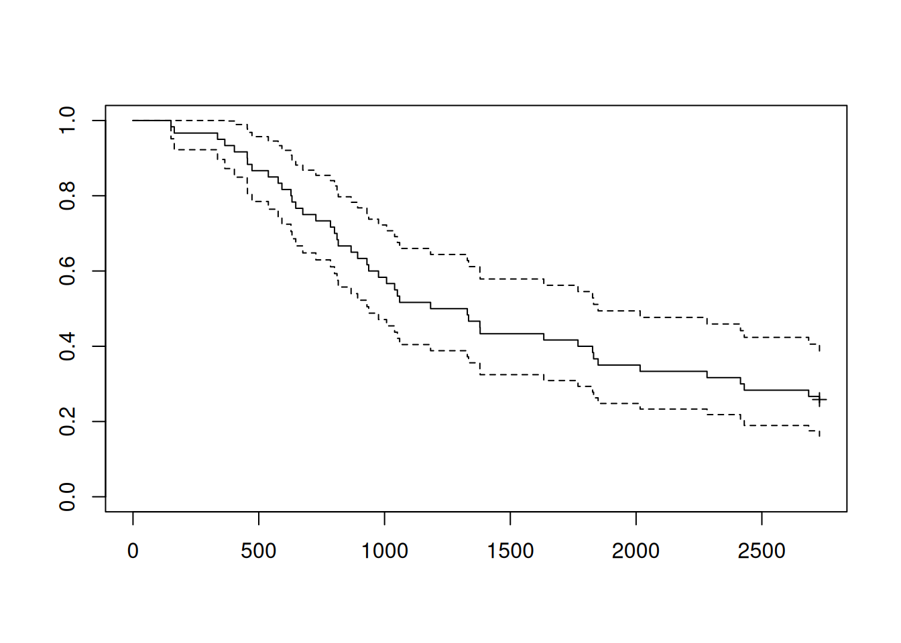
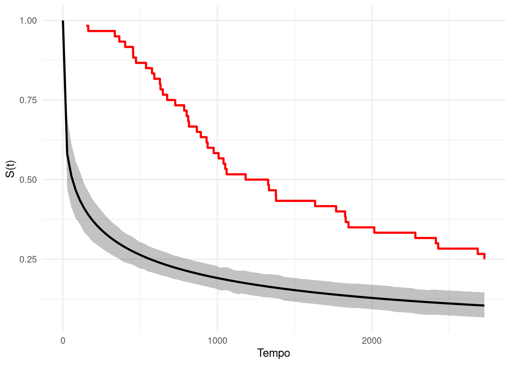

Kline = read.csv(url("https://raw.githubusercontent.com/rmcelreath/rethinking/refs/heads/master/data/Kline.csv"), sep =";") |>
arrange(contact)3 Alguns modelos
3.1 GLM com efeito aleatório
| culture | population | contact | total_tools | mean_TU |
|---|---|---|---|---|
| Yap | 4791 | high | 43 | 5.0 |
| Lau Fiji | 7400 | high | 33 | 5.0 |
| Trobriand | 8000 | high | 19 | 4.0 |
| Chuuk | 9200 | high | 40 | 3.8 |
| Tonga | 17500 | high | 55 | 5.4 |
| Malekula | 1100 | low | 13 | 3.2 |
| Tikopia | 1500 | low | 22 | 4.7 |
| Santa Cruz | 3600 | low | 24 | 4.0 |
| Manus | 13000 | low | 28 | 6.6 |
| Hawaii | 275000 | low | 71 | 6.6 |
data {
int<lower=1> n;
int<lower=1> p;
matrix[n, p] X;
vector Y;
}
parameters {
vector[p] beta;
}
transformed parameters {
vector[n] eta;
eta = X * beta;
}
model {
for (i in 1:n) {
Y[i] ~ poisson(exp(eta[i]));
}
for (k in 1:p) {
beta[k] ~ normal(0,1);
}
}
NotaLeia-me se você não for uma batata
A compilação do modelo acima (como está) deve falhar. Se em algum momento uma distribuição discreta é atribuida a alguma variável
X = model.matrix(total_tools ~ contact * log(population), data = Kline)
attr(X,"assign") = attr(X,"contrasts") = NULL
X (Intercept) contactlow log(population) contactlow:log(population)
1 1 0 8.474494 0.000000
2 1 0 8.909235 0.000000
3 1 0 8.987197 0.000000
4 1 0 9.126959 0.000000
5 1 0 9.769956 0.000000
6 1 1 7.003065 7.003065
7 1 1 7.313220 7.313220
8 1 1 8.188689 8.188689
9 1 1 9.472705 9.472705
10 1 1 12.524526 12.524526Código
data_GLM =
list(
n = nrow(X),
p = ncol(X),
X = X,
Y = Kline$total_tools
)
mod_GLM = stan_model(model_name = "GLM", model_code = "
data {
int<lower=1> n;
int<lower=1> p;
matrix[n, p] X;
int<lower=0> Y[n];
}
parameters {
vector[p] beta;
}
transformed parameters {
vector[n] eta;
eta = X * beta;
}
model {
for (i in 1:n) {
Y[i] ~ poisson(exp(eta[i]));
}
for (k in 1:p) {
beta[k] ~ normal(0,1);
}
}
")
# saveRDS(mod_GLM, "stuff/mod_GLM.rds", compress = "xz")fit_GLM = rstan::sampling(mod_GLM, data = data_GLM)
# shinystan::launch_shinystan(fit_GLM)3.1.1 Offset e comparações múltiplas
danishlc = read.csv(url("https://raw.githubusercontent.com/carlosdemoura/2026_aula_stan_dani/refs/heads/main/stuff/danishlc.csv"), sep =",")generated quantities {
real Horsens_vs_Kolding;
real Horsens_vs_Vejle;
real Kolding_vs_Vejle;
Horsens_vs_Kolding = beta[2] - beta[3];
Horsens_vs_Vejle = beta[2] - beta[4];
Kolding_vs_Vejle = beta[3] - beta[4];
}| City | Pop | Age | Cases |
|---|---|---|---|
| Fredericia | 3059 | 40-54 | 11 |
| Fredericia | 800 | 55-59 | 11 |
| Fredericia | 710 | 60-64 | 11 |
| Fredericia | 581 | 65-69 | 10 |
| Fredericia | 509 | 70-74 | 11 |
| Fredericia | 605 | >74 | 10 |
| Horsens | 2879 | 40-54 | 13 |
| Horsens | 1083 | 55-59 | 6 |
| Horsens | 923 | 60-64 | 15 |
| Horsens | 834 | 65-69 | 10 |
Código
X = model.matrix(Cases ~ 0+City + Age, data = danishlc)
attr(X,"assign") = attr(X,"contrasts") = NULL
data_GLM2 =
list(
n = nrow(X),
p = ncol(X),
X = X,
Y = danishlc$Cases,
offset = danishlc$Pop
)
mod_GLM2 = stan_model(model_name = "GLM2", model_code = "
data {
int<lower=1> n;
int<lower=1> p;
matrix[n, p] X;
int<lower=0> Y[n];
vector[n] offset;
}
parameters {
vector[p] beta;
}
transformed parameters {
vector[n] eta;
eta = X * beta;
}
model {
for (i in 1:n) {
Y[i] ~ poisson(offset[i] + exp(eta[i]));
}
for (k in 1:p) {
beta[k] ~ normal(0,10);
}
}
generated quantities {
real Horsens_vs_Kolding;
real Horsens_vs_Vejle;
real Kolding_vs_Vejle;
Horsens_vs_Kolding = beta[1] - beta[2];
Horsens_vs_Vejle = beta[1] - beta[3];
Kolding_vs_Vejle = beta[2] - beta[3];
}
")
# saveRDS(mod_GLM2, "stuff/mod_GLM2.rds", compress = "xz")fit_GLM2 = rstan::sampling(mod_GLM2, data = data_GLM2)plot(fit_GLM2, pars = "beta", ci_level = 0.95)
3.2 Análise de sobrevivência
isoladores = read.csv(url("https://github.com/carlosdemoura/2026_aula_stan_dani/raw/refs/heads/main/stuff/isoladores.csv"))| tempo | evento |
|---|---|
| 151 | 1 |
| 164 | 1 |
| 336 | 1 |
| 365 | 1 |
| 403 | 1 |
survfit(Surv(tempo, evento)~1, data = isoladores) |>
plot(mark.time=T)
data {
int<lower=1> n;
vector[n] tempo;
int<lower=0,upper=1> evento[n];
int<lower=1> m;
}
parameters {
real<lower=0> alpha;
real<lower=0> sigma;
}
model {
alpha ~ gamma(0.1, 0.1);
sigma ~ gamma(0.1,0.1);
for (i in 1:n) {
if (evento[i] == 1) {
target += weibull_lpdf(tempo[i] | alpha, sigma);
} else {
target += weibull_lccdf(tempo[i] | alpha, sigma);
}
}
}
generated quantities {
vector[m] t_grid;
vector[m] S;
real t_max = max(tempo);
for (j in 1:m) {
t_grid[j] = (j - 1) * t_max / (m - 1);
S[j] = exp( -pow(t_grid[j] / sigma, alpha) );
}
}Código
data_surv =
list(
tempo = isoladores$tempo,
evento = isoladores$evento,
n = nrow(isoladores),
m = 100
)
mod_surv_weib = stan_model(model_name = "surv_weib", model_code = "
data {
int<lower=1> n;
vector[n] tempo;
int<lower=0,upper=1> evento[n];
int<lower=1> m;
}
parameters {
real<lower=0> alpha;
real<lower=0> sigma;
}
model {
alpha ~ gamma(0.1, 0.1);
sigma ~ gamma(0.1,0.1);
for (i in 1:n) {
if (evento[i] == 1) {
target += weibull_lpdf(tempo[i] | alpha, sigma);
} else {
target += weibull_lccdf(tempo[i] | alpha, sigma);
}
}
}
generated quantities {
vector[m] t_grid;
vector[m] S;
real t_max = max(tempo);
for (j in 1:m) {
t_grid[j] = (j - 1) * t_max / (m - 1);
S[j] = exp( -pow(t_grid[j] / sigma, alpha) );
}
}
")
# saveRDS(mod_surv_weib, "stuff/mod_surv_weib.rds", compress = "xz")fit_surv_weib = rstan::sampling(mod_surv_weib, data = data_surv, pars = c("alpha", "sigma", "S"))post = rstan::extract(fit_surv_weib)
lapply(post, dim)$alpha
[1] 4000
$sigma
[1] 4000
$S
[1] 4000 100
$lp__
[1] 4000for (par in c("alpha", "sigma", "lp__")) {
post[[par]] = matrix(post[[par]])
}
lapply(post, dim)$alpha
[1] 4000 1
$sigma
[1] 4000 1
$S
[1] 4000 100
$lp__
[1] 4000 1resumo = list()
for ( parameter in names(post) ) {
hpd_temp = apply( post[parameter][[1]], 2,
function(x) {
coda::HPDinterval(coda::as.mcmc(x))[,c("lower", "upper")] |>
as.numeric()
})
resumo[[parameter]] = list(
"media" = apply( post[parameter][[1]], 2, mean ) ,
"mediana" = apply( post[parameter][[1]], 2, stats::median ) ,
"hpd_min" = apply( hpd_temp, 2, function(x) { unlist(x) |> purrr::pluck(1) }) ,
"hpd_max" = apply( hpd_temp, 2, function(x) { unlist(x) |> purrr::pluck(2) })
)
}
resumo = sapply(resumo, function(x) { abind::abind(x, along = 2) })
lapply(resumo, head)$alpha
media mediana hpd_min hpd_max
[1,] 0.3127242 0.3092214 0.2142132 0.4163889
$sigma
media mediana hpd_min hpd_max
[1,] 199.6129 196.3944 92.90144 309.5576
$S
media mediana hpd_min hpd_max
[1,] 1.0000000 1.0000000 1.0000000 1.0000000
[2,] 0.5807644 0.5788890 0.4715592 0.6939873
[3,] 0.5105856 0.5081931 0.4126085 0.6105609
[4,] 0.4668335 0.4647727 0.3782532 0.5570634
[5,] 0.4348575 0.4331221 0.3604060 0.5244225
[6,] 0.4096590 0.4078468 0.3349886 0.4866656
$lp__
media mediana hpd_min hpd_max
[1,] -465.8559 -465.5534 -467.8382 -464.8256Código
df_fit =
resumo$S |>
cbind("tempo" = seq(0, max(isoladores$tempo), length.out = 100)) |>
as.data.frame()
km =
survfit(
Surv(tempo, evento) ~ 1,
data = isoladores
) |>
broom::tidy()
ggplot(df_fit, aes(x = tempo, y = media)) +
geom_ribbon(aes(ymin = hpd_min, ymax = hpd_max), alpha = 0.3) +
geom_line(linewidth = 1) +
geom_step(
data = km,
aes(x = time, y = estimate),
color = "red",
linewidth = 1,
inherit.aes = FALSE
) +
labs(x = "Tempo", y = "S(t)"
) +
theme_minimal()
ImportanteNão tranque sua matrícula
Para não desistir da inferência Bayesiana, refaça a análise acima padronizando os tempos pelo tempo máximo.